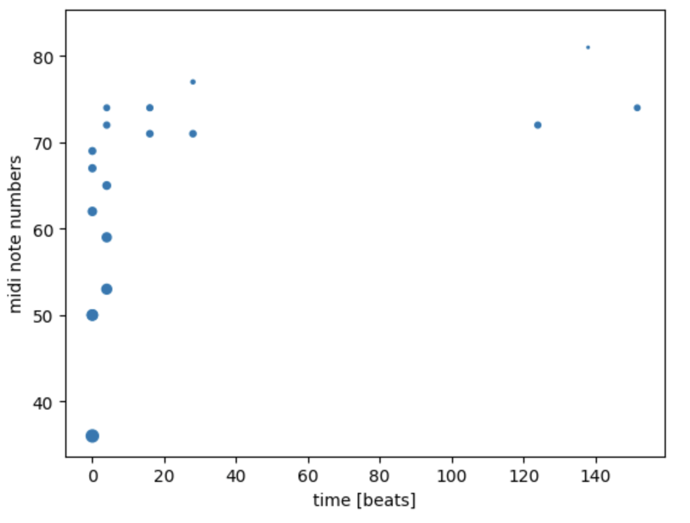
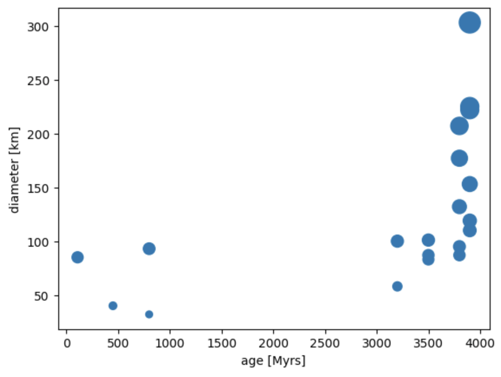
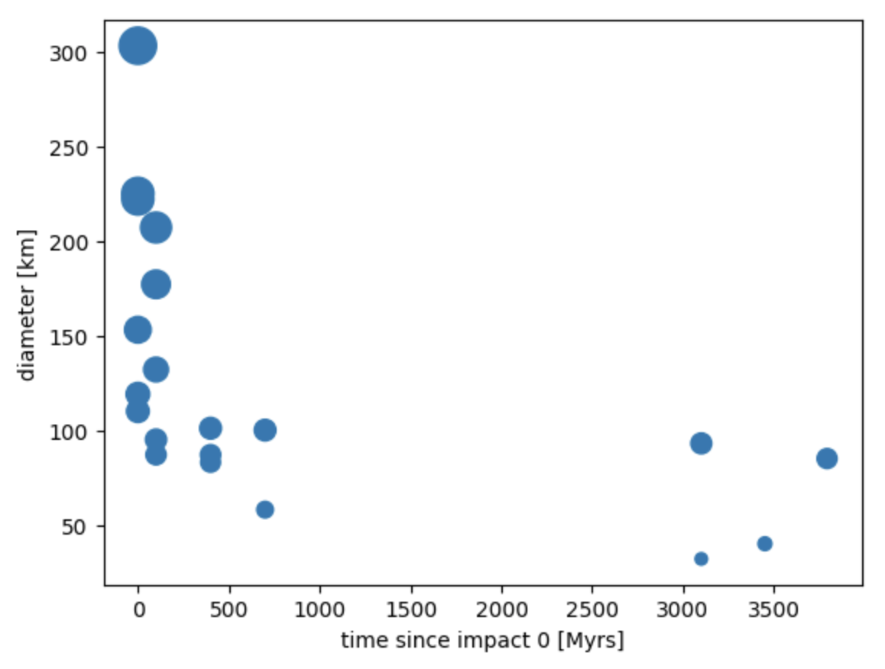

Click the moon to start
open fullscreen ↗Research Question
How can sonification enhance perception of scientific data and reveal patterns not immediately visible in traditional representations?
Methodology
Approach inspired by Matt Russo's sonification work, combining scientific accuracy with perceptual clarity.
Parameter Mapping
Diameter → pitch (inverted: larger craters = lower tones, 110-330 Hz) + duration (larger = longer sustain, 1.5-4.0s)
Latitude/longitude → impact position on sphere
Volume scaled to crater size (56-100)
Dataset: 9 craters selected from ~9,000 catalogued formations based on parameter diversity (diameter 32-101 km, depth 1.0-4.7 km, age 108-3800 Ma) and geographical distribution.
Process
Workflow: Python/Jupyter (data processing, MIDI generation) → Logic Pro (cinematic composition) → JavaScript/Web Audio
View Python notebook, data, and MIDI on GitHub →

MIDI temporal structure generated in Python
AI-Human Collaboration Insight
During development, I identified a critical error in AI-generated pitch values: tones weren't inversely correlated with visible crater sizes (e.g., Aristarchus 40km sounded higher than Kepler 32km). Required systematic recalculation using: pitch = 330 - ((diameter - 32) / (101 - 32)) × 220
Takeaway: AI excels at code structure and mathematical operations; human perception catches relationship inconsistencies. Effective collaboration requires iterative verification against perceptual goals.
Audio Output
Logic Pro composition using Orchestral Organ, Studio Grand, and Time Delay Synth. Layered soundscape addresses temporal compression (animation: 3-5s between impacts; geological reality: millions of years).
Data Analysis

Crater diameter vs age: larger craters tend to be older, formed during heavy bombardment periods

Bombardment patterns over lunar history
Applications
Methodology transferable to other NASA datasets (exoplanet discoveries, Mars seismic activity) and scientific domains including climate research, particle physics, and biological systems. Sonification provides alternative access for visually impaired audiences; synchronized visuals support those with hearing differences.
Tools
Python (numpy, pandas, matplotlib, midiutil), Logic Pro, JavaScript/Web Audio API, Claude, Grok
Reflection
Yes. The clearest finding came from an error. An early AI-generated version had the pitch mapping reversed — Aristarchus (40 km) sounded higher than Copernicus (93 km). The inconsistency wasn't visible in the code. It was audible the moment the animation ran. Visual size and pitch contradicted each other, and the brain flagged it immediately. Fixing it required recalculation, then verification across two additional AI tools. The process confirmed something specific: AI generates functional code reliably. It does not listen to the result.
The mapping that works — larger craters sounding lower and longer — aligns with how the brain already connects size and pitch, grounded in physical acoustics and crossmodal perception research (Spence, 2011). When the mapping runs with that rather than against it, the data becomes easier to hold.
One limit the project couldn't resolve: geological time. Compressing millions of years into seconds produces a coherent animation but no felt sense of duration. That's a separate research question.
Combining visual and audio channels for data exploration reaches more ways of processing information — some people orient through shape, others through sequence, others through sound. NASA's open data makes this kind of exploration possible at low cost. AI makes the iteration loop short enough to actually test perceptual hypotheses rather than only describe them.
Appendix: Extended Dataset
Initial exploration with 20 craters across the full parameter range (diameter 32-225 km, age 108-4000 Ma).
Click to start/stop · Buttons toggle data labels